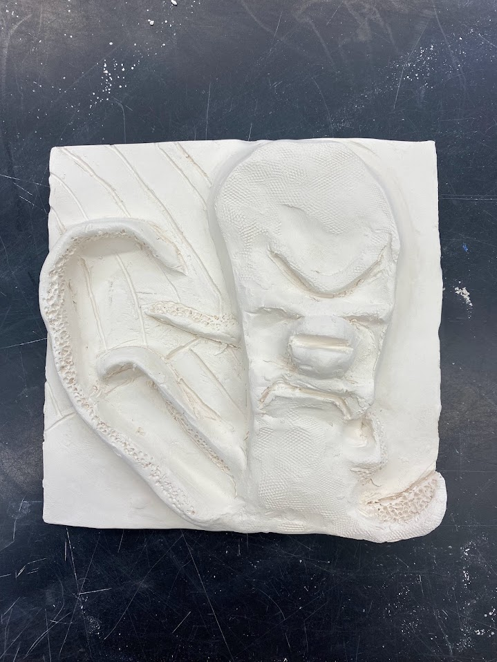
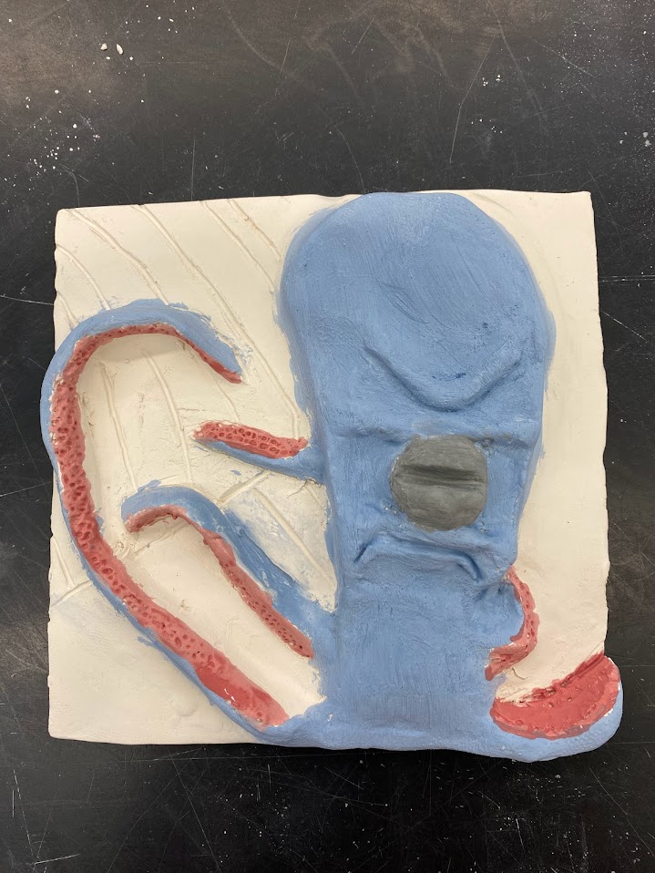
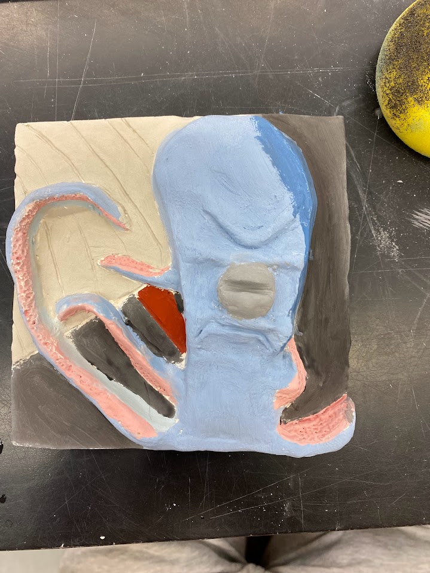

About the Project
For this 3D art project, I created a clay slab showing a giant squid attacking a ship. I was inspired by sea-monster stories like 20,000 Leagues Under the Sea and wanted it to feel like the ship was being pulled down into the ocean. I built the squid in raised relief so its tentacles come forward from the slab and wrap around the boat. I added suction-cup texture to the tentacles and lines in the background to suggest moving water. After firing it, I used blue glaze for the ocean and squid, red accents on the tentacles, and darker brown tones for the ship.


